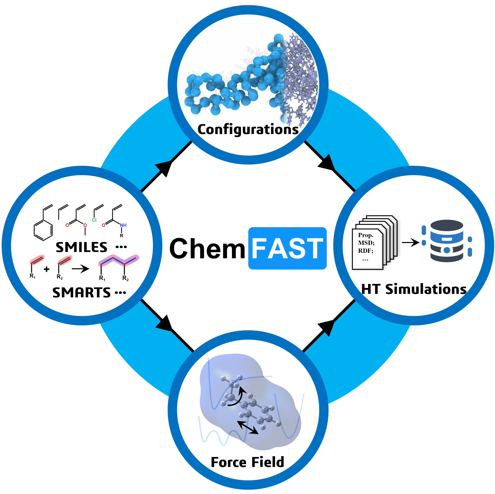
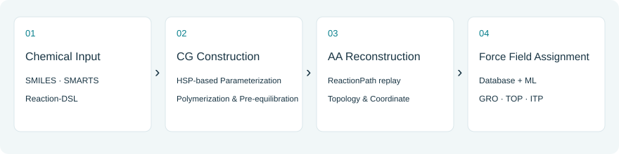

ChemFAST¶
Build atomistic polymer models from chemical definitions.
ChemFAST connects reactants and reaction rules to coarse-grained (CG) construction, all-atom (AA) reconstruction, and force-field assignment. Start with the browser-based DoMD tools or reproduce a complete local workflow. You do not need to learn the Python API before running the first example.

1. What does ChemFAST do?¶

Define molecular building blocks and their allowed reactions, construct or supply a CG configuration, and reconstruct atomistic connectivity and coordinates. ChemFAST also exports force-field and simulation inputs; external MD engines carry out relaxation. See Workflow for the methods and limitations behind these stages.
2. How would you like to start?¶
Explore OPLS AutoFF, DoMD Topology, or experimental DoMD AL in your browser; no local command-line installation is needed to try the available web tools.
Set up the local Python environment for tutorial reproduction, custom workflows, and simulation-engine integration.
Follow five checkpoints from a simple Reaction-DSL input to an AA output and an optional MD relaxation.
After the first run, learn how the Reaction-DSL changes molecular building blocks and reactions.
Suggested learning path¶
Introduction → Online tools or Installation → Quick Start → Workflow → Reaction DSL → Tutorials → Reference → Testing. Follow the first three sections to produce a result; read the deeper explanations when you need to change chemistry or troubleshoot.